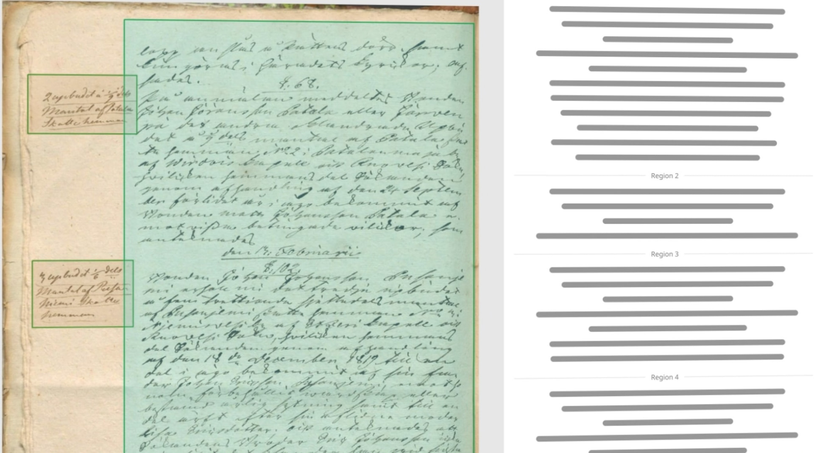

Sütterlin, Kurrent und altdeutsche Urkunden
zuverlässig entziffert
Laden Sie Ihre Urkunden hoch und erhalten Sie in Minuten präzise Transkriptionen, Übersetzungen und genealogische Auswertungen – archivtauglich aufbereitet.
Die ersten 5 Seiten gratis · danach 4,80 € pro Seite inkl. MwSt. · Karte erst bei Bedarf hinterlegen.

Alternativlesart erkannt: „Anna" oder „Anna Maria"?
Quelle: Kirchenbuch, 1842 · unsicher markiert statt geglättet
Anwendungen
Wofür Verbatim eingesetzt wird
Vier typische Aufgaben, für die Erbenermittler, Kanzleien und Familienforscher Verbatim nutzen.
Sütterlin übersetzen
Briefe, Tagebücher und Urkunden in Sütterlinschrift entziffern lassen.
Kurrent lesen
Deutsche Kurrentschrift aus Akten und Kirchenbüchern lesbar machen.
Urkunden transkribieren
Historische Handschriften archivtauglich digitalisieren.
Für Erbenermittler
Workflow und Abrechnung für Kanzleien und Nachlassverwaltung.
Ablauf
In drei Schritten zur fertigen Analyse
Fall anlegen
Erstellen Sie einen Fall und benennen Sie die Familie oder den Erblasser.
Urkunden hochladen
PDFs oder Scans hochladen – auch mehrere Dokumente gleichzeitig.
Analyse erhalten
Transkription, Übersetzung und Plausibilitätsprüfung – als sauberes Dossier.
Funktionen
Vom verblassten Original zum verwertbaren Dokument
Eine Werkzeugkiste für alles, was zwischen Archivfund und Erbenermittlung steht.
Präzise Transkription
Handgeschriebene und gedruckte Urkunden in altdeutscher Schrift werden zeichengetreu erfasst – inklusive Namen, Daten und Orten.
Mehrsprachige Übersetzung
Latein, Französisch, Polnisch, Tschechisch oder Russisch – Dokumente werden direkt ins Deutsche übertragen.
Plausibilitätsprüfung
Namen, Orte und Daten werden auf historische Plausibilität geprüft. Unsicherheiten werden klar mit Alternativen gekennzeichnet.
Referenz-Bibliothek
Mit Historikern entwickelt: trainierte Beispiele und Vergleichsdokumente fließen automatisch in jede Analyse ein.
Strukturierte Dossiers
Pro Fall entstehen archivtaugliche Dossiers mit Quellenangaben, ideal zur Weitergabe an Behörden und Gerichte.
Für Nachlassverwalter
Geeignet für Erbenermittler, Nachlassverwalter und Kanzleien – pro Vorgang abrechenbar.
Beispiel
Aus verblasster Sütterlinschrift wird lesbarer Text
Verbatim übernimmt Handschriften zeichengetreu und markiert unsichere Stellen statt sie stillschweigend zu glätten. Namen, Orte und Daten werden auf historische Plausibilität geprüft — mit Alternativlesarten, wo die Vorlage mehrdeutig ist.
Vision & Roadmap
Was als Nächstes kommt
Verbatim ist mehr als Transkription. So wollen wir die Lücke zwischen Urkundenfund und fertiger Erbenermittlung weiter schließen – mit Funktionen, die es als fertiges Werkzeug bisher kaum gibt.
Automatischer Stammbaum
Erkannte Personen, Orte und Verwandtschaftsangaben werden automatisch zu einem visuellen Stammbaum verknüpft – mit GEDCOM-Export für Ahnenforschungs-Software.
Erbquoten-Rechner
Aus den extrahierten Urkundendaten den gesetzlichen Verwandtschaftsgrad und die Erbquote automatisch berechnen – als gerichtsfertige Grafik.
Schreiber-Fingerprint
KI erkennt, ob mehrere Dokumente von derselben Hand stammen, und gruppiert Aktenbestände automatisch nach Schreiber oder Notar.
Fallübergreifende Personensuche
Namen, Orte und Daten werden über alle Fälle eines Kontos hinweg verknüpft – taucht eine Person erneut auf, werden Sie sofort informiert.
Archiv-Quellen-Matching
Direkter Abgleich erkannter Namen und Orte mit offenen Archivportalen wie Matricula, Archion oder FamilySearch – inklusive Belegstellen-Vorschlag.
Live-Konfidenz-Heatmap
Unsichere Erkennungen werden direkt farblich auf dem Originalscan markiert – nicht nur im Text, sondern genau an der Stelle im Bild.
Scan-App für den Lesesaal
Dokumente direkt im Archiv mit dem Smartphone fotografieren – mit automatischer Entzerrung und Qualitätsprüfung vor dem Hochladen.
Kollaborative Fallakten
Mehrere Bearbeiter pro Fall, Kommentare direkt an Textstellen und automatische Fristenerinnerung für Nachlassverfahren.
Preis
Seitengenau abgerechnet
Ein einziger, transparenter Preis. Keine Pakete, kein Abo, kein verfallendes Guthaben.
Start gratis
Die ersten 5 Seiten pro Konto sind kostenlos. Keine Karte nötig.
So funktioniert die Abrechnung
- Konto anlegen und sofort die ersten 5 Seiten kostenlos analysieren – ohne Zahlungsmethode.
- Sind die Freiseiten verbraucht: Karte im Profil hinterlegen (Stripe).
- Vor jeder kostenpflichtigen Analyse: Seitenzahl, Freianteil und Endbetrag werden angezeigt und bestätigt.
- Nach erfolgreicher Analyse erfolgt die Abbuchung. Rechnung per E-Mail.
Schlägt eine Analyse fehl, fällt keine Gebühr an. Bei verbrauchsrelevanten Verträgen erlischt das Widerrufsrecht mit Start der jeweiligen Analyse — die Zustimmung holen wir vor jeder Abbuchung erneut ein.
Häufige Fragen
Was Sie wissen möchten
Bereit für die nächste Urkunde?
Legen Sie in unter einer Minute Ihren ersten Fall an.